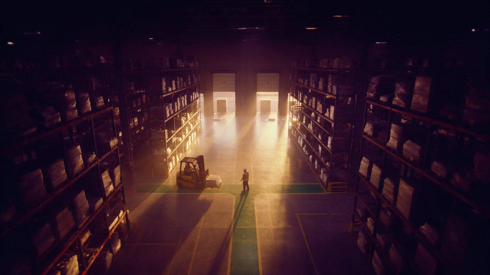

Forklifts and people on one floor
Shared aisles, blind corners and loading bays keep producing near-misses that nobody reports.

Forklifts, people and trucks on one floor. CamCore flags near-misses on the CCTV you already run.
None of these are new. What's new is being able to see them as they happen, on the equipment you already run.
Shared aisles, blind corners and loading bays keep producing near-misses that nobody reports.
Volume spikes bring new and temporary staff who do not yet know the site rules.
Footage is only pulled after something has gone wrong, and control rooms cannot watch every feed.
Pick a use case to see the alert your team would receive.
 See how CamCore works
See how CamCore works Warehousing and Distribution teams across Saudi Arabia, the UAE, Oman, Pakistan and Indonesia work under specific obligations. CamCore gives you the evidence to show they are met.
Continuous PPE and hazard-zone checks, plus the summer midday outdoor work ban (12:00–15:00, 15 June–15 September), with a timestamped record for every event.
Evidence that PPE and safe-zone rules are enforced on every shift, and that the midday break (12:30–15:00, 15 June–15 September) is observed.
Documented, continuous checks on PPE and restricted areas, and visibility of outdoor work during the summer midday ban.
A searchable record of hazards, near-misses and corrective actions to support the risk assessments both Acts require.
The documented, verifiable safety records SMK3 audits expect, captured as work happens instead of compiled before the audit.
Video and event data processed and stored in-country, with retention windows and access controls you set.
Prove forklift, dock and PPE detection at one distribution centre on the cameras you already run, with evidence your safety team can act on.
No cost and no obligation to roll out. We set it up on what you already run.
Self-serve tools and short reads, useful before you ever talk to us.
Estimate the value of fewer incidents and less manual monitoring.
Open the tool ToolkitCheck which of your cameras and systems CamCore can use.
Open the tool Insight · 7 min readBuild a programme that works before an incident, not after.
Read the insight Insight · 5 min readThe gap between the policy and the floor.
Read the insightStill curious? We'll walk you through it on a short call.
No setup is needed per worker. Rules apply to everyone on the floor, which is most useful when new staff do not yet know the site.
Yes. Each zone has its own rules and alert routing, so the dock lead sees dock events and the yard manager sees yard events.
Most high-mounted cameras work for proximity, zone and obstruction rules. The Camera & VMS Compatibility Checker gives a first answer, and we review your camera list before the pilot.
No. On-vehicle sensors protect the driver’s immediate area. CamCore covers the fixed-camera view of crossings, docks and walkways, and records every event.
Start with a pilot on the cameras you already own, and grow it across your operation.